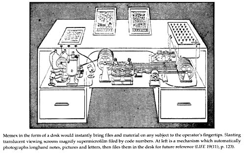
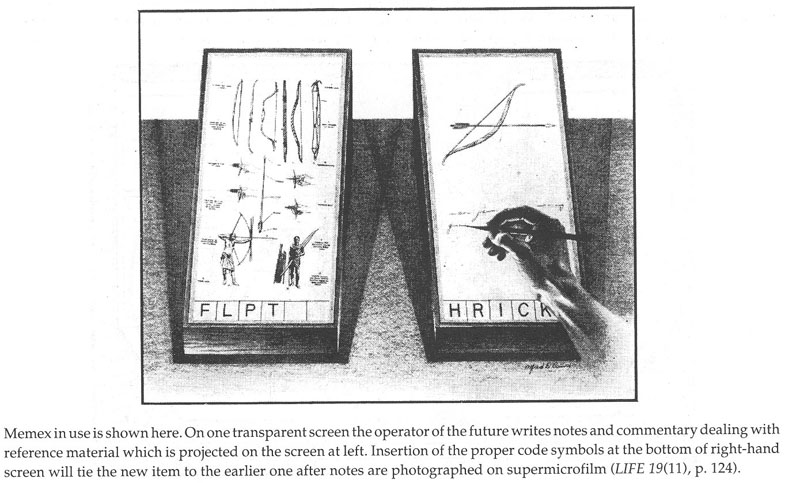

"As We May Think" by Vannevar Bush is an extremely influential essay that was published in 1945. In the essay, Bush remarks about the use of technology in the current day and age. He is troubled that it has been used for mass destruction and violence, as this was written in the aftermath of Hiroshima. Bush theorizes a world where technology is used to extend our capabilities as humans, specifically our memory and knowledge capabilities. Through a theoretical machine he coins the Memex, Bush creates the concept of a machine that contains a collective memory for all of human knowledge. In brief, Bush describes the modern day personal computer, complete with sharing capabilities, online encyclopedias, hypertext, and the Internet. 'As We May Think' was not only influential in the physical structure of computing devices and the Internet, but also in how humans have come to associate and think about information. This essay broke group in how information technology can be used in a meaningful way that can postively impact society.
Long Live the Web by Tim Berners Lee, the inventor of the WWW, dictates how he believes the web must be treated in order to preserve its future. He argues that the web is supposed to be for anyone who wants to share any type of information, regardless of the content. This is precisely what makes the Web so democratizing and revolutionary to the world. In this essay, he mentions some fundamental aspects of the design of the Web that makes it such a powerful resource. For example, the Web is so universal and ubiquitous because of technological protocols like HTML, HTTP, and URLs. These tools make the web easy to use for everyone. However, Berners Lee warns readers that this liberating aspect of the web is under immediate threat by large companies, governmental regulation, and other sources of commercialization. He calls for open, royalty free standards, which will drive innovation.
I really enjoyed how Berners Lee mentioned the concept of social machines. Social machines are when individual users come together on a platform such as Yelp or Rotton Tomatoes to review and share their opinion. These publicly posted opinions inform others' decisions, producing an output that is inherently reliant on the presence of technology. I am highly interested in how technology and society are growing and evolving together to create a new way of interacting with the world and others.